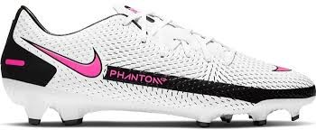
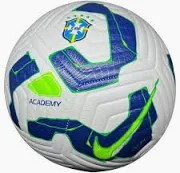

HG Sports
Sobre o Futebol
O futebol é o esporte mais conhecido mundialmente. Recheado de craques como Hulk, Messi e Neymar,
é um esporte muito tradicional. Seu principal campeonato é a Copa do Mundo, sonho de qualquer jogador.
Saiba mais
Produtos
Chuteira Nike Phantom GT CL FG Masculino Branco

R$ 239,90 - Tamanhos: 39, 40, 41, 42, 43
Referência: CK8459-160
Composição:
Externa: Sintético
Forro: Tecido
Solado: Borracha
Indicado para campo
Fechamento com cadarço
Bola Futebol de Campo Nike CBF Academy Brasileirão 2025

R$ 298,90 - Tamanho: Único
Marca: NIKE
Material: Borracha, Poliéster, Poliuretano (PU)
Indicado para campo
Peso do produto: 440 gramas
Camisa II Atlético Mineiro 25/26
R$ 399,99 - Tamanhos: P, M, G, GG, EGG
Marca: Adidas
Material: Poliéster
Indicado para: Jogo
Gola: Gola Careca
Definição da Tecnologia: Tecido antiumidade que absorve o suor e ajuda a manter a pele seca e confortável